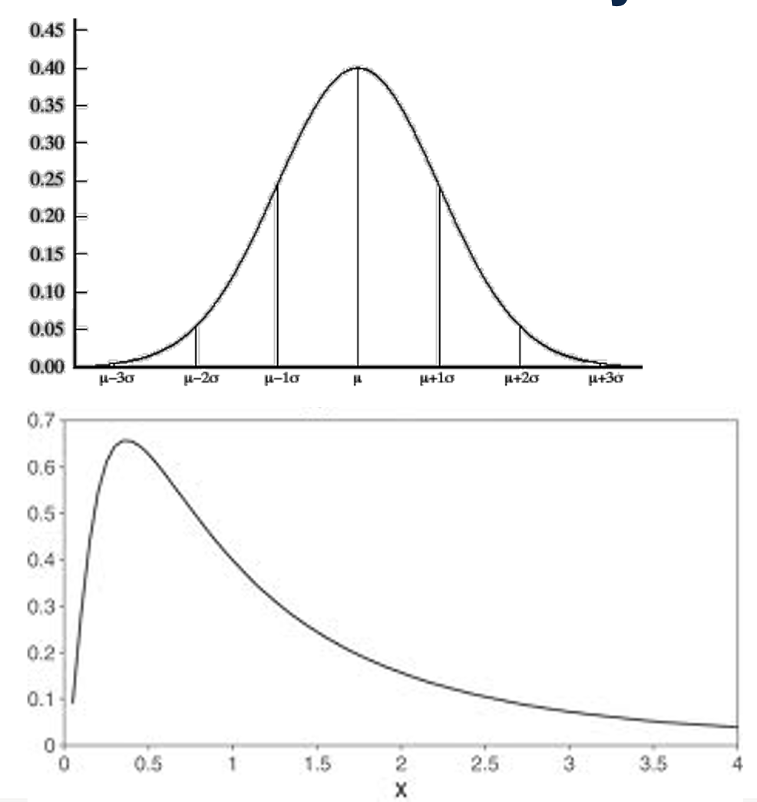
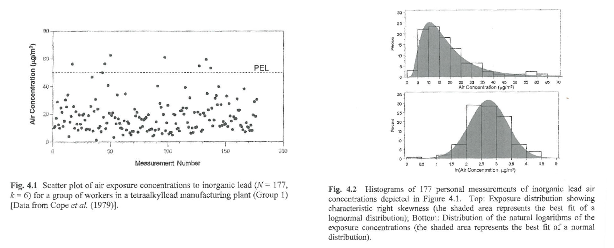
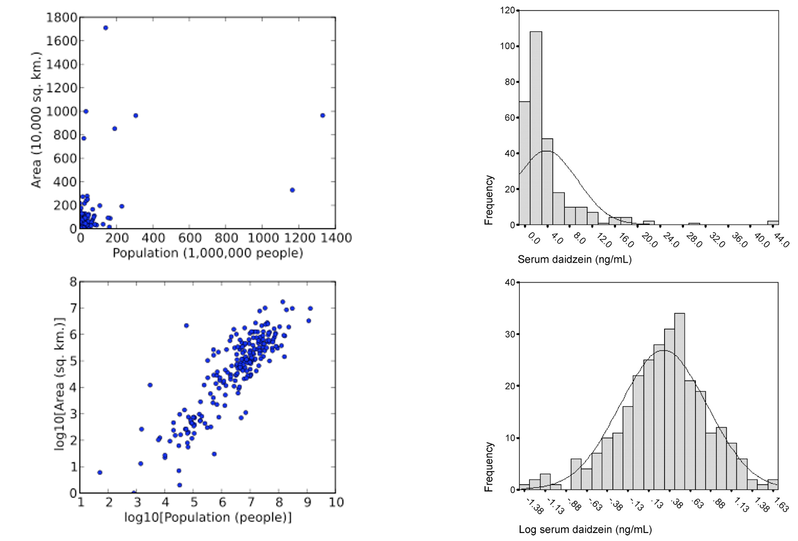
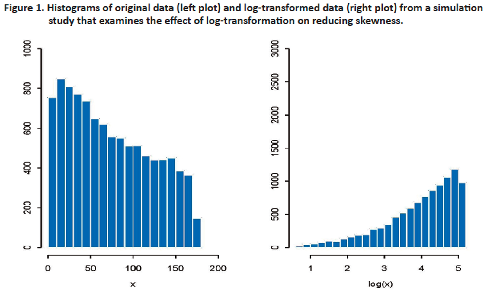
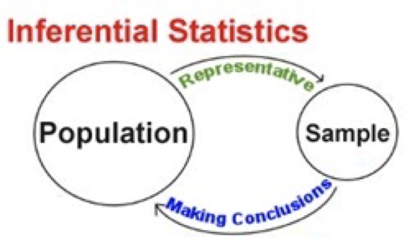
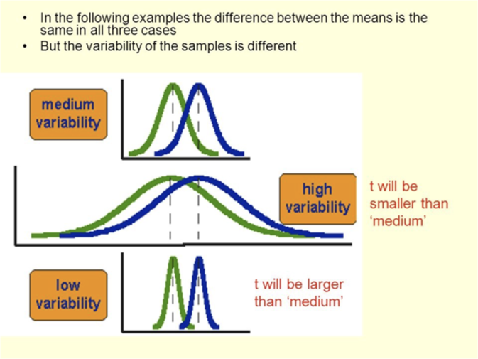
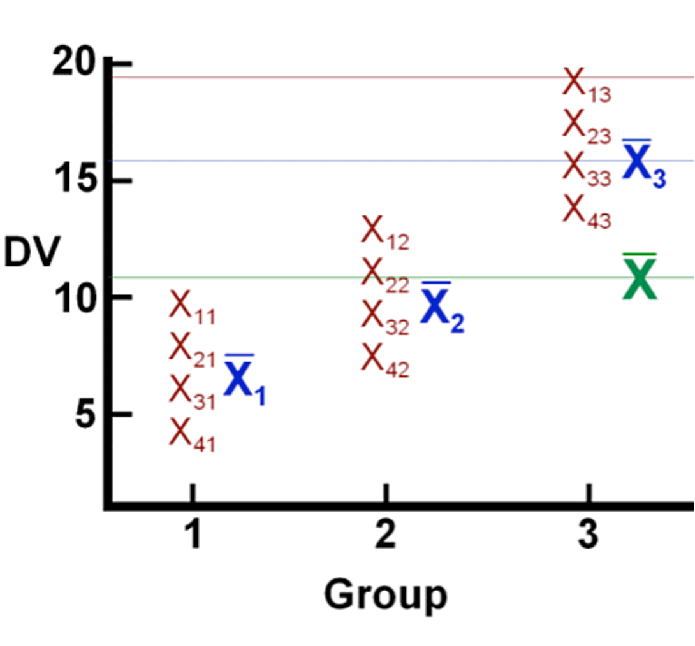
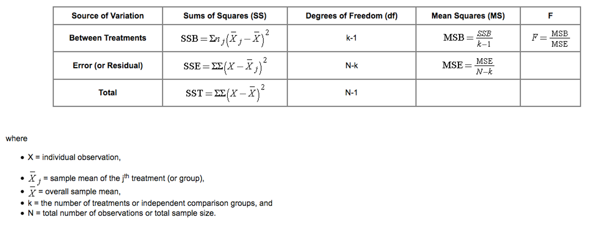
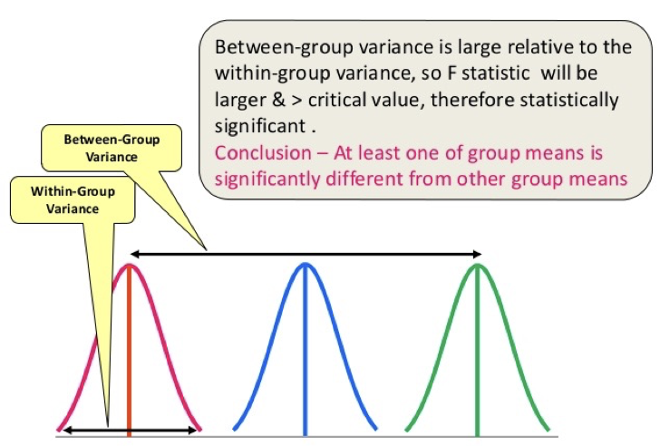
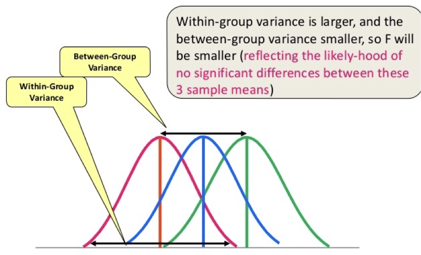

Transformations
Inferential statistics
t-test
ANOVA
Many inferential statistical methods assume data are normally distributed
t-test
ANOVA
Linear regression
However, many exposures positive and right-skewed

\(Y_i = \text{ln}(x_i)\)
where
\(Y_i\) is log-transformed data point
\(x_i\) is original data point
\(\text{ln}\) is natural logarithm function
Natural log (ln) transform of lognormally distributed variable has properties of normal distribution
Described by geometric mean (GM) and geometric standard deviation (GSD)
Can only be used for positive values
Common practice to add a small positive constant, M, to all observations before applying transformation (examples: 0.001 or 1)
Although this seems harmless, can have a noticeable effect on level of statistical significance in hypothesis testing
No guarantee log transformation will reduce skewness
Despite conventional wisdom, analysis on log transformed data may not address outliers better than original data
Exposure distributions - original and transformed

Rappaport and Kupper, 2008


Quantile-quantile plots
Arithmetic mean of log transformed exposures: \(\bar{y}\)
Arithmetic SD of log transformed exposures: \(\Theta_y\)
Geometric mean (antilog of mean of log-transformed exposures): \(GM = e^{\bar{y}}\)
Geometric standard deviation: \(GSD = e^{\Theta_y}\)
Back-transformed mean ≠ original variable mean
Proper to run statistical tests on transformed values
“If it ain’t broke, don’t fix it.” Transformation bad if:
Distribution more or less symmetrical, few outliers
Variances reasonably homogeneous
Transformation may be useful – more to come
Descriptive statistics applied to populations are called parameters
Inferential statistics apply to samples
We’ll focus on two inferential approaches today
t-test
ANOVA


Detect differences between means of (normally-distributed) samples
Student’s (unpaired) t-test
Test hypothesis that means of two samples are equal; null is
\[ \bar{x}_1=\bar{x}_2 \]
Paired sample t-test
Single-sample t-test
Unpaired t-test
Paired-sample t-test
Technique for assessing how categorical independent variables affect continuous dependent variable
Like a t-test generalized to three or more means
Null hypothesis:
\[ \bar{x}_1=\bar{x}_2=\bar{x}_3=...=\bar{x}_n \]
Identify differences in mean exposures between more than two groups
Within-group > between group = poor exposure grouping
Within-group < between group = good exposure grouping
Evaluate relationship of within-worker variance within exposure group to between-worker variance
Within-worker > between worker = good exposure grouping
Within-worker < between worker = poor exposure grouping
Continuous dependent variable
Independent variable is 2+ categorical groups
Data independent from each other
Errors normally distributed
Variances same for all groups
ANOVA fairly robust for these assumptions


Compares variability in exposure accounted for by predictor variable vs error variability
Error variability (mean squared error) measures inherent randomness of observations
Large differences between groups = significant F test
\[ F=\frac{MS_{Between}}{MS_{Within}} \]


Df Sum Sq Mean Sq F value Pr(>F)
job_title 4 13254 3314 28.77 <2e-16 ***
Residuals 188 21649 115
---
Signif. codes: 0 '***' 0.001 '**' 0.01 '*' 0.05 '.' 0.1 ' ' 1
8 observations deleted due to missingnessBigger F = significant
Could do t-tests for all pairs of predictor variable categories
Not a good idea
As number of exposure groups grows, so does number of needed pair comparisons
Each comparison introduces risk of error
ANOVA puts all data into one number (F) and gives one P for null hypothesis
Enough with words already. Let’s see how ANOVA actually works
Detect differences between means of (normally-distributed) samples
Student’s (unpaired) t-test
Test hypothesis that means of two samples are equal; null is
Paired sample t-test
Test whether two measurements on same individual are equal
Is the average TWA in our dataset significantly different from the 85 dBA REL?
Does the average TWA in our dataset differ significantly by gender?
Welch Two Sample t-test
data: TWA by gender
t = -0.72416, df = 21.8, p-value = 0.4767
alternative hypothesis: true difference in means between group Female and group Male is not equal to 0
95 percent confidence interval:
-10.790425 5.207281
sample estimates:
mean in group Female mean in group Male
84.85768 87.64925 Does the average TWA in our dataset differ before and after some random date (say 2010)?
Welch Two Sample t-test
data: TWA by prepost2010
t = -1.3805, df = 179.57, p-value = 0.1691
alternative hypothesis: true difference in means between group post2010 and group pre2010 is not equal to 0
95 percent confidence interval:
-6.562996 1.159938
sample estimates:
mean in group post2010 mean in group pre2010
85.90422 88.60575